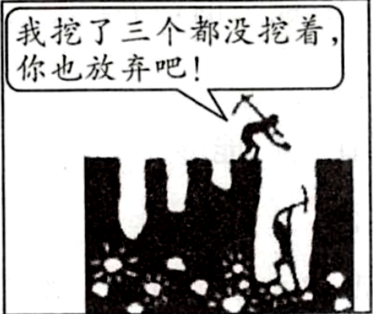
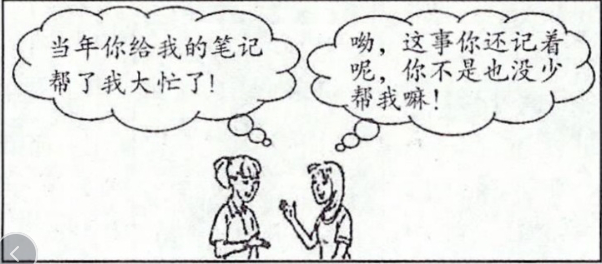
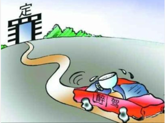
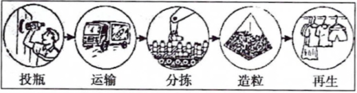
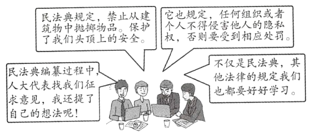
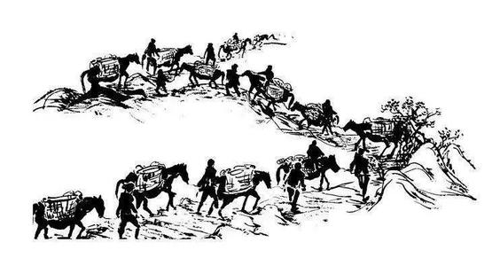
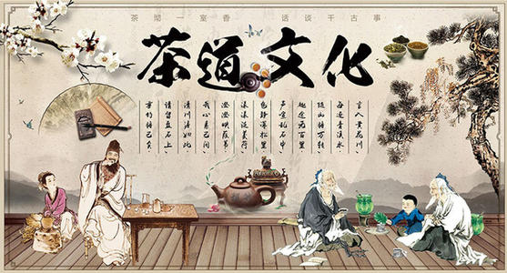
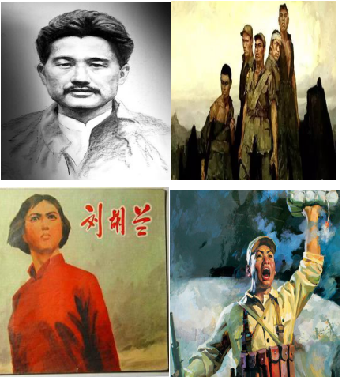
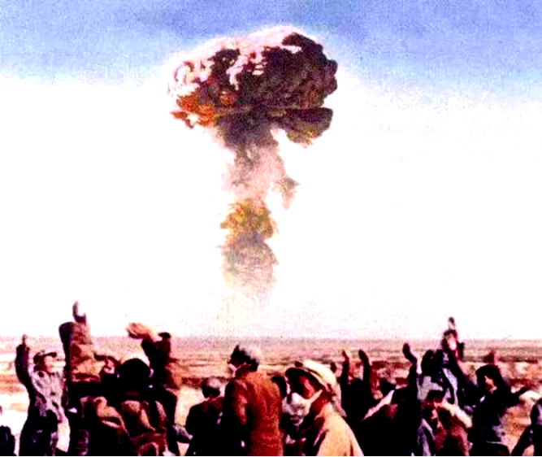
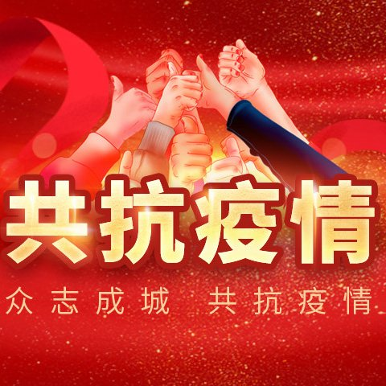

2020年北京市中考政治试题 原卷解析
2020年北京市中考政治试卷
第一部分 选择题（共40分）
本部分共20小题，每小题2分，共40分，在每小题列出的四个选项中，选出最符合题目要求的一项。
1. 2019年，我国有十多条新的高铁线开通运营，全年新增高铁里程超过5000公里，总里程突破3.5万公里，稳居世界第一。其中，有一条是世界上最先进的时速350公里的智能高速铁路，也是北京冬奥会的重要配套工程，这条高铁是（ ）
A. 京张高铁B. 日兰高铁C. 郑渝高铁D. 成贵高铁
【答案】A
【解析】
【详解】本题为时政题，解析略。
2. 2020年5月27日，我国高程测量登山队克服重重困难，成功从___________北坡登上峰顶，完成世界最高峰的测量任务，中国人再次书写了攀登者的新传奇。（ ）
A. 乔戈里峰B. 珠穆朗玛峰
C. 梅里雪山D. 唐古拉山
【答案】B
【解析】
【详解】时政题，解析略。
3. 下列选项中与图寓意最一致的是（ ）

A. 自信的人能够正确对待失败
B. 对他人的建议应该平静地接受
C. 梦想能不断激发生活的热情和勇气
D. 如果成功有秘诀，那一定离不开坚持
【答案】D
【解析】
【详解】此题旨在考查学生对梦想的认识，认真观察漫画中的文字和人物行为，理解漫画的寓意，找到与教材知识的结合点。漫画中连续挖了三个最后放弃，是缺乏坚持不懈精神的表现，启示我们梦想的实现需要努力，努力需要坚持，如果成功有秘诀，那一定离不开坚持，所以ABC不符合题意，正确答案选D。
4. 以下内容是某班同学在“学习心得分享会”中的一些发言。
为解一道题，我一中午没休息，饭都顾不上吃，苦思冥想，在解出题目的一刹那，我感到很畅快。 | 学习内容很多，但我尽量做到学习锻炼两不误，合理安排时间，专时专用，提高学习效率。 | 读书丰富了我的生活、开阔了我的视野，浩瀚书海给予我无穷的智慧和向上的力量。 |
他们的发言告诉我们（ ）
①学习需要独立思考、掌握科学方法
②学习压力抑制学习兴趣
③学习能充盈精神、打开生命的视窗
④学习中的苦恼大于快乐
A. ①②B. ①③C. ②④D. ③④
【答案】B
【解析】
【详解】苦思冥想，在解出題目的一刹那，我感到很畅快，体现了学习是苦乐交织的，但不能说学习中的苦恼大于快乐，④观点错误；合理安排时间，专时专用，提高学习效率，体现了学习需要独立思考、掌握科学方法，①观点正确；适度的学习压力可以提高我们的学习兴趣，促进学习成绩的提高，②观点错误；读书丰富了我的生活、开阔了我的视野，浩瀚书海给予我无穷的智慧和向上的力量体现了学习能充盈精神、打开生命的视窗，③观点正确，所以本题选择B答案。
5. “居家学习期间，我在妈妈手把手指导下学习切菜，经过反复练习，终于可以切出粗细均匀的土豆丝和黄瓜丝了。我从中体验到劳动的快乐和分担家务的喜悦。”这位同学的感受，让我们认识到（ ）
①学生以读书为主，劳动浪费时间
②分担家务有助于营造良好的家庭氛围
③增强劳动意识，要从小事做起
④劳动技能可培养，以后再学也不迟
A. ①②B. ①④C. ②③D. ③④
【答案】C
【解析】
【详解】本题考查正确认识劳动的重要性。学生的主要任务是学习，但是也要培养劳动意识，从小事做起，承担起力所能及的劳动义务，营造良好的家庭氛围，做走在时代前列的学习者、劳动者、奉献者，肩负起历史使命，①④观点错误，②③观点正确，所以本题选择C答案。
6. 图中的对话告诉我们（ ）

① 互帮互助中建立友谊
互帮互助中建立友谊
②要学会坦然接受新朋友
③友情能带给人持久的温暖
④每一段友谊都会地久天长
A. ①②B. ①③C. ②④D. ③④
【答案】B
【解析】
【详解】本题考查对友谊的正确认识。从漫画中两人的对话内容中可以看出，友谊是平等的，双向的，在互帮互助中建立友谊，并能带给人持久的温暖，让我们获得认可，在精神上得到满足，①③观点正确；友谊不是一成不变的，我们要学会接受一段友谊的淡出，坦然接受新的友谊，②观点正确不合题意；④观点中“都”字一词太绝对，错误，所以本题选择B答案。
7. 一位世界著名的指挥家说：“我只强调三个音，使我的乐队变成团队。第一是‘起音’，起音不齐，乐曲就乱。第二是个人的‘专业音’，不管是吹号的还是打鼓的，都要表现出自己在专业上最好的、最精准的音。第三是‘团队音’，当你展示自己的‘专业音’时，还要考虑到整体，是否会干扰别的人的音。”这段话表明（ ）
①集体规则会限制个人专业发展
②展示白己能确保集体的“和声”更美
③美好的集体一定有共同的规则
④共同目标和团队协作是集体力量之源
A. ①②B. ①③C. ②④D. ③④
【答案】D
【解析】
【详解】本题考查怎样让和声更美。题文材料中指挥家的话表明共同目标和团队协作是集体力量之源，集体规则能够保证集体的和声更动听，美好的集体一定有共同的规则，③④符合题意；集体规则不会限制个人专业发展，①说法错误；“确保”说法过于绝对，②说法错误。故选D。
8. 如果对图中的家长说一句话，最恰当的是（ ）

A. 羊有跪乳之恩，鸦有反哺之义
B. 不以规矩，不成方圆
C. 宝剑锋从磨砺出
D. 爱人者，人恒爱之
【答案】C
【解析】
【详解】此题旨在考查学生对挫折的认识，根据所学，挫折是人生的一部分，人生难免有挫折。漫画中的父亲为儿子挡住一切困难、阻碍、失利等，不利于儿子培养坚强的意志，所以ABD不符合题意，正确答案选C。
9. 新疆帕米尔高原上，麦麦提努尔是家族里 第三代护边员，他守护的区域好多地段是无人区。巡边的路寒冷又漫长，他一走就是二十多年。如今，女儿也加入了护边队。“一家四代接力守边”的事迹表明（ ）
第三代护边员，他守护的区域好多地段是无人区。巡边的路寒冷又漫长，他一走就是二十多年。如今，女儿也加入了护边队。“一家四代接力守边”的事迹表明（ ）
①国家利益与个人利益不会发生矛盾
②子女应该继承父辈的职业
③他们积极履行维护国家安全的义务
④国家利益要依靠人民艰苦奋斗来实现
A. ①②B. ①③C. ②④D. ③④
【答案】D
【解析】
【详解】本题考查维护国家安全。题干表述了在新疆帕米尔高原上，一家四代接力守边，这表明了他们积极履行维护国家安全的义务，③是正确的。在边境上，巡边的路寒冷又漫长，他一走就是二十多年，这说明了国家利益要依靠人民艰苦奋斗来实现，④是正确的。①是错误的，这个说法过于绝对了，有时国家利益也会与个人利益发生矛盾，排除。②不是题干主旨的表述，排除。故本题选D。
10. 下雨了，楼下住户的被子还晾在外面，楼上的住户在白家阳台的晾衣架上支起了三把伞。“三把伞”撑起的是（ ）

A. “真诚老实，笃守诺言”的良好品质
B. “严于律己，宽以待人”的行为准则
C. “己所不欲，勿施于人”的交往之道
D. “乐于助人，与人为善”的美好品德
【答案】D
【解析】
【详解】本题考查与人为善。题干表述了楼上为了不使楼下的被子让雨淋，为楼下撑起了三把伞，这体现了楼上居民的“乐于助人，与人为善”的美好品德，D是正确的。A表述不是题干表述的美德，排除。B不符合题意，排除。C不是题干主旨的表述，排除。故本题选D。
11. “共和国勋章”获得者、连任13届全国人大代表的申纪兰说，人民代表大会制度保障人民说话的权利。当人大代表，就要代表人民的利益，代表人民说话，代表人民办事。从中可以看出（ ）
①人民代表大会是我国最高国家权力机关
②人民代表大会制度保障人民当家作主
③人大代表要为人民服务，对人民负责
④各級政府是各级人民代表大会的执行机关
A. ①②B. ①④C. ②③D. ③④
【答案】C
【解析】
【详解】此题旨在考查学生对人民代表大会制度认识，题文中申纪兰的观点表明人民代表大会制度保障人民当家做主，人大代表要为人民服务，对人民负责，①观点错误，全国人民代表大会是我国最高国家权力机关；②③观点正确；④观点虽然正确，但与题文主旨不符，所以正确答案选C。
12. 某班同学运用法律知识对生活中的现象进行分析。下列观点正确的是（ ）
A. 进行宪法宣誓，是在行使政治权利
B. 努力完成学业，是享有劳动权的体现
C. 主动申报纳税，是自觉履行基本义务
D. 破坏文物古迹，均属一般违法行为
【答案】C
【解析】
【详解】此题旨在考查学生对法律知识的认识，A宪法宣誓是为了增强宪法意识，维护宪法权威，不是行使政治权利，观点错误；B努力完成学业，是享有受教育权，履行受教育义务的表现，观点错误；C主动申报纳税，履行了依法纳税的基本义务，观点正确；D“均属”观点绝对化，是错误的，所以正确答案选C。
13. 在居委会组织下，某社区进行“最美楼栋”建设。通过“邻里微信群”和“美丽楼栋建设小组”，居民们积极提出合理化建议，居委会尽心服务，共同让小区更加和美。从“最美楼栋”建设可以看出（ ）
A. 基层群众自治，能促进社会和谐
B. 遵守正当程序，能避免产生纠纷
C. 培养高雅情趣，能有效调节情绪
D. 加强多党合作，能拓宽民主渠道
【答案】A
【解析】
【详解】此题在考查学生对我国基本政治制度的认识，根据所学， 我国基层群众自治组织包括城市的居民委员会和农村的村民委员会。题文中居委会组织某社区进行“最美楼栋”建设，表明基层群众自治，能够促进社会和谐，A符合题意；B“避免”观点绝对化，是错误的；CD在题文中没有体现，不符合题意，所以正确答案选A。
14. “开车不喝酒，喝酒不开车。”最高人民检察院的数据显示，2019年“醉驾”成为刑事追诉第一犯罪。这警示人们要（ ）

A. 承担责任，管理社会治安B. 低碳出行，减少交通拥堵
C. 珍爱生命，自觉遵守法律D. 积极维权，勇于承担过错
【答案】C
【解析】
【详解】此题旨在考查学生对规则和生命的认识，题文中最高人民法院的数据显示2019年“醉驾”成为刑事追诉第一犯罪，警示人们要珍爱生命，自觉遵守社会规则，遵守法律法规等，A管理社会秩序不是公民的角度，不符合题意；BD没有正确理解漫画寓意，观点错误，所以正确答案选C。
15. 直播泡茶、纳鞋底、鉴宝，北京老字号的大师们在镜头前一亮相，就成为带货能力可观的“网红主播”。如今，北京很多老字号开网店、做直播、运营粉丝社群，加速数字化转型。如果给这段新闻拟个标题，最恰当的是（ ）
A. 老字号数字化转型，赢回年轻消费者
B. 经济快速发展，全靠直播带货促销量
C. 老字号历史悠久，国有经济大放异彩
D. 网络助力经济发展，老字号焕发新活力
【答案】D
【解析】
【详解】北京很多老字号开网店、做直播、运营粉丝社群，加速数字化转型，体现了网络为经济发展注入了新活力，促进了非公有制经济的发展，C观点错误，D观点正确；老字号数字化转型，不仅仅赢回了年轻消费者，A观点错误；经济快速发展，网络直播带货促销量，全靠一词太绝对，B观点错误，所以本题选择D答案。
16. “12345热线”是政府关注民生、倾听民意的平台。
小林所在小区没有无障碍通道，看到坐着轮椅的李奶奶每次出行都要两个人抬着上下台阶，他向“12345”热线反映了这一情况，问题很快得到解决。 孩子挑食偏食没有吃饱，家长没到学校了解真实情况，就向“12345热线”反应学校伙食差，要求学校大幅度提高学生伙食水平。 |
上述材料共同告诉我们（ ）
①公民参与民主生活有反应诉求的渠道
②公民要严格执法，坚持权利和义务相统一
③公民参与民主生活的形式愈加丰富
④公民要以理性、公正、客观的反应意见
A. ①②B. ①④C. ②③D. ③④
【答案】B
【解析】
【详解】本题考查积极参与政治生活。题干表述了小林通过12345热线反映了小区没有无障碍通道的问题，并很快得到了解决，这说明了公民参与民主生活有反应诉求的渠道，①是正确的；题干也表述了家长在没有了解真实情况的前提下，就向12345反映学校存在的问题，这说明了公民要以理性、公正、客观的反应意见，①④是正确的。②是错误的，公民没有执法的权力，排除。③是错误的，题干表述的是公民参与民主生活的渠道是打电话，并没有表述其它渠道，排除。故本题选B。
17. 截至2019年，北京已有市级以上爱国主义教育基地近200家。同学们积极走进教育基地参观学习，感受爱国主义的磅礴力量，激发爱国热情。围绕关爱国，同学们展开了讨论。下列观点正确的是（ ）
①爱国是人世间最深沉、最持久的情感
②爱国要与日常生活相联系
③爱国就要维护国家统一，反对分裂
④爱国是社会主义核心价值观国家层面的价值目标
A. ①②③B. ①②④C. ①③④D. ②③④
【答案】A
【解析】
【详解】此题旨在考查学生对爱国的认识，根据所学，爱国是人世间最深沉、最持久的情感，爱国要与日常生活相联系，爱国就要维护国家统一，反对分裂，①②③观点正确；④观点错误，爱国是社会主义核心价值观公民个人层面的价值目标，所以正确答案选A。
18. 图是“初中生网民上网经常从事各类活动的比例”中的部分数据。由此可见（ ）

①网络信息良莠不齐
②网络能扩展人际交往的范围
③转发越多的网络信息越真实
④网络可以让生活更加丰富多彩
A. ①③B. ①④C. ②③D. ②④
【答案】D
【解析】
【详解】此题旨在考查学生对网络的认识，认真观察图表的标题、表格中的数据，并对数据进行比较，从初中生利用网络学习、聊天、玩游戏、购物、看新闻等，可以看出网络可以让生活更加丰富多彩，网络能扩展人际交往的范围等，①观点虽然正确，但在图表中没有体现，不符合题意；②④观点正确；③观点错误，转发多的信息不一定真实，所以正确答案选D。
19. 在第二届中国国际进口博览会上，一口直径10米的中式火锅里，翻滚着来自新西兰的毛肚、印度的辣椒、加拿大的海鲜、巴西的牛肉；展区里，比萨斜塔、柬埔寨皇宫、马尔代夫沙滩草棚各具特色，自俄罗斯花腔女高音深情献唱，盛装的卢旺达艺人跳起欢快的舞蹈……上述材料形象地体现出（ ）
①中国开放包容的博大胸怀 ②中国的饮食文化最具优势
③不同文化之间的平等交流 ④不同文化存在碰撞与冲突
A. ①②B. ①③C. ②④D. ③④
【答案】B
【解析】
【详解】从题文中的描述中可以看出，我国尊重世界文化的多样性和丰富性，具有开放包容的博大胸怀，①观点正确；②观点中“最”字太绝对错误；体现了不同文化之间的平等交流，而不是 碰撞与冲突，③观点正确，④观点错误，所以本题选择B答案。
20. 《抗击新冠肺炎疫情的中国行动》白皮书指山，截至2020年5月31日，中国向27个国家派出29支医疗专家组，向150个国家提供抗疫援助；向各国出口口罩706亿只，呼吸机9.67万台；中国始终同国际社会分享疫情信息，开展科研合作；呼吁各国团结合作战胜疫情，加强全球公共卫生治理、建设全球公共卫生体系。这说明（ ）
①中国积极加强同世界各国的合作
②中国担当向世界展示了大国风范
③中国居安思危，注重国家经济安全
④中国是发展中国家，坚持独立自主
A. ①②B. ①④C. ②③D. ③④
【答案】A
【解析】
【详解】疫情发生后，中国发出中国声音，提供中国智慧和方案，积极同世界各国合作，体现了中国负责任的大国形象，①②观点正确，抗击疫情不是注重经济安全 的表现，③观点错误；中国是世界上最大的发展中国家，奉行独立自主的和平外交政策，④观点正确不合题意，所以本题选择A答案。
第二部分非选择题（共50分）
21. 疫情无情，人间有爱。无数的抗疫感人事迹，像一束束光带给人们希望，温暖了人心。某校召开“最让你感动的人”线上主题班会，同学们分享了一幕幕感人瞬间。
感人瞬间 | ①“这辈子我为了什么，不就是为了病人嘛！”一名走出病房的医生动情地说。 ②“我们没有穿白衣服，是不是也算天使？”“算！”除夕那天，两位连夜加班做防护服的工人自豪地说。 ③“一栋楼五六十户，需要爬几趟才能全部排查到位。现在累得我看见楼梯两条腿就打颤”。一位社区志愿者一边坚持排查，一边笑着对同事说。 ④“不要播我的名字，妈妈看了会担心。”一名毅然背起行囊，准备出发的90后援鄂护士，在接受采访时噙着泪说。 ⑤“别怕，无论遇到什么事情，我们都会陪着你！”深夜，一位老师给正在单独隔离的学生回复说。 |
（1）结合你的所见所闻，再分享一个疫情期间令你感到的瞬间。
（2）任选上述两个感人瞬间，结合所学知识，说明为什么他们是“最让你感动的人”。
【答案】（1）80多岁的钟南山远赴武汉抗疫疫情等，言之有理即可。
（2）①敬畏生命尊重生命，生命至上；②敬业奉献；③服务社会，奉献社会；④坚持国家利益至上，爱国敬业；⑤关爱他人，与人为善等。
【解析】
【详解】（1）此问属于开放性试题，只要言之有理即可。（2）此问旨在考查学生对优秀品质的认识，要求学生任选两个感人瞬间，说明感人的原因即可。选择①，从敬畏生命尊重生命的角度回答；选择②，从敬业奉献的角度回答；选择③，从服务社会奉献社会的角度回答；选择④，从坚持国家利益至上回答；选择⑤，从关爱他人，与人为善回答即可。
22. 2020年5月1日，新版《北京市生活垃圾管理条例》正式实施。某社区开展垃圾分类宣传活动，展板上有以下内容。
一个塑料瓶的命运
一个塑料瓶可能会有“废”或“宝”两种截然不同的命运。 | 命运一 不分类 塑料瓶直接焚烧会造成大气污染。被埋进土壤、扔入河湖大约需要四五百年才能完全降解。埋入地下的塑料瓶，对土壤和地下水造成污染。流入海洋的塑料瓶，难免会被一些海洋生物误食，最终又通过食物链循环，让人类自食其果。 |
命运二 分类 
|
垃圾是“废”还是“宝”，结合材料，运用所学知识谈谈你的看法。
【答案】垃圾是“废”，垃圾不分类，会造成环境污染，危害人类的生存和健康，不利于人与自然和谐共生。垃圾是“宝”，垃圾分类，有利于落实保护环境、节约资源的基本国策，减少垃圾污染；提高资源利用率，建设环境友好型、资源节约型社会；有利于走绿色发展的道路，实现人与自然和谐共生，推进生态文明建设，建设美丽中国。
【解析】
【详解】本题间接考查对垃圾分类处理的作用和垃圾不分类处理的危害。根据所学知识，结合展板中的内容，垃圾是“废”学生可从垃圾不分类，会造成环境污染，危害人类的生存和健康，不利于人与自然和谐共生等角度作答；垃圾是“宝”学生可从有利于落实保护环境、节约资源的基本国策，减少垃圾污染；提高资源利用率，建设环境友好型、资源节约型社会；有利于走绿色发展的道路，实现人与自然和谐共生，推进生态文明建设，建设美丽中国等角度作答。
23. 《中华人民共和国民法典》是新中国历史上首个以“法典”命名的法律。
材料一 为了让民法典走进我们生活，让法治走进我们心里，学校制作了法治宣传栏。
该法_____规定我国的国家性质、根本制度、根本任务、公民的基本权利和义务等国家生活中的根本问题。
民法典
第一条 为了保护民事主体的合法权益，调整民事关系，维护社会和经济秩序，适应中国特色社会主义发展要求，弘扬社会主义核心价值观，根据宪法，制定本法。
刑法
第一条 为了惩罚犯罪，保护人民，根据宪法，结合我国同犯罪作斗争的具体经验及实际情况，制定本法。
教育法
第一条 为了发展教育事业，提高全民族的素质，促进社会主义物质文明和精神文明建设，根据宪法，制定本法。
（1）在方框中填写相关法律的名称。
（2）根据民法典、刑法和教育法的第一条规定，找出它们的共性，并说明具有这一共性的理由。
材料二 民法典与公民的生活息息相关，它的颁布施行引发了人们的关注和热议。

（3）结合材料二和所学知识，说明“民”与“法”的关系。
【答案】（1）宪法。
（2）宪法是民法典、刑法和教育法的立法基础和立法依据，是宪法的具体化。宪法是国家的根本大法，具有最高的法律地位、法律效力和法律权威。
（3）法是人民意识和利益的体现，法律规范公民的行为，维护公民的合法权益。
【解析】
【详解】（1）根据题文中的描述，规定我国的国家性质、根本制度、根本任务、公民的基本权利和义务等国家生活中的根本问题的是宪法，由此得出答案。
（2）本问考查正确认识宪法和普通法律之间的关系。“根据宪法，制定本法”，体现了宪法是民法典、刑法和教育法的立法基础和立法依据，是宪法的具体化。理由可从宪法是国家的根本大法，具有最高的法律地位、法律效力和法律权威等角度作答。
（3）本问考查正确认识“民”与“法”的关系，是对学生认知能力的考查。从民法典的内容中可以看出，法律规范公民的行为，维护公民的合法权益。民法典编撰过程中提出自己的想法体现了法是人民意志和利益的体现，学生据此回答即可。
24. 2020年5月21日是联合国确定的首个“国际茶日”，某校开展了“云参观中国茶叶博物馆”的社会实践活动，同学们分组设计主题海报，请你参与其中，完成以下任务。
【海报一】 | 【海报二】 | 【海报三】 |
茶让生活更美好 无论是“琴棋书画诗酒茶”，还是“柴米油盐酱酷茶”，茶已融入了生活的方方面面。客来时，敬杯茶，能增进情谊；口干时，饮杯茶，能润喉生津；疲劳时，喝杯茶，能舒筋解乏；空暇时，品杯茶，能修身养性。
| 中国是“茶的故乡”。自汉唐以来，有一条著名的“茶马古道”。它从中国云南和四川的茶叶产地出发，以人背马驮的最原始运载方式，翻山越岭，从亚洲通向欧洲、非洲。中国的茶文化不断向外传播，并影响整个世界。 
| 重德，是中国茶文化的核心内涵。中国茶文化的“和”精神，主要表现在以礼待人、和诚处世、互敬互重、互助互勉上。通过饮茶、敬茶，以茶联谊，以茶传情，以茶表德。人们借品茶体验和领悟清和、俭约、自尊、廉洁、求真、求美的高雅境界。 
|
（1）分别给海报二和海报三拟个恰当的名称。
（2）结合材料，运用所学知识，谈谈此次“云观展”活动的意义。
【答案】（1）茶文化走向世界；茶叶弘扬美德；
（2）有利于了解中华文化，有利于弘扬中华传统美德，有利于锻炼学生的社会实践能力。
【解析】
【详解】（1）本题考查给海报拟定标题的能力。提炼海报二主旨“中国的茶文化不断向外传播”，所以设计的标题是茶文化走向世界；提炼海报三主旨“茶文化蕴含着中华传统美德”，所以设计的标题是茶叶弘扬美德，据此作答。
（2）本题考查活动意义，围绕此次活动对于了解中华文化、弘扬中华传统美德、锻炼实践能力等方面的重要性阐述。
25. 决胜全面小康，决战脱贫攻坚。
材料一 毛南族是我国28个人口较少民族之一。“出行爬坡上坎，一里挂九梯，石头缝里种粮食，喝水只能靠天”，这些曾是广西环江毛南族自治县群众生活的真实写照。近年来，国家投入巨大资金，让2万名村民搬出大山、解决千百年的饮水难题、改造升级电网、使当地特色产业覆盖率达100%……2020年5月，毛南族实现整族脱贫，印证了脱贫路上、全面建成小康社会“一个都不能少”。
（1）全面建成小康社会，为什么“一个都不能少”？
材料二 作为祖国首都，北京市承担着新疆、西藏、内蒙古和河北等8省区90个旗县扶贫支援任务。在扶贫支援的道路上，形成了一批可推广、可持续的北京经验。
经验1 在新疆和田，北京通过援建学校、选派教师支教，提升当地教育水平。近三年，有30万孩子走进学校，一批批农民通过职业培训成为产业工人。70多岁的维吾尔族老妈妈说：“日子越来越好了，北京教师亚克西！” | 经验2 结合内蒙古的皮雕、银器等非物质文化遗产项目，北京帮助其挖掘当地文化特色，发挥文化资源优势，发展特色旅游。在创新设计等方面提供支持，推动内蒙古文化创意产业发展，帮助当地群众脱贫致富。 | 经验3 北京组织专家赴河北赤城，围绕蔬菜育种技术、可追溯农业技术及土壤检测技术等开展咨询服务。通过实地考察、田间地头的现场指导，解决当地发展过程中遇到的技术难题，带动更多贫困户增收致富。 |
（2）从上述经验中任选两条，结合所学知识，说明北京是如何帮助贫困地区圆了脱贫致富梦的。
【答案】（1）共同富裕是社会主义的根本原则；我国坚持民族平等团结和共同繁荣的基本原则；我国是一个统一的多民族国家；党的奋斗目标是人民对美好生活的向往；发展的根本目的是增进民生福祉等。
（2）重视教育，提高贫困地区人民的科学文化素质；传承中华优秀传统文化，发展特色产业；利用科技促进当地经济的发展等。
【解析】
【详解】（1）此问旨在考查学生对全面建成小康社会的认识，此题属于因果类关系题，结合材料中毛南族的发展，其原因从共同富裕、党的奋斗目标、发展的根本目的、处理民族关系的原则、我国是一个统一的多民族国家等方面回答，言之有理即可。（2）此问旨在考查学生对北京怎样帮助贫困地区脱贫致富的认识，结合经验一，从重视教育提高贫困地区人民的科学文化素质回答；结合经验二，从传承中华优秀传统文化，发展特色产业回答；结合经验三，从重视科技促进当地经济发展等方面回答，紧扣材料，言之有理即可。
26. 2020年是中华民族发展史上的一个重要时间节点，第一个百年奋斗目标即将实现。
材料一 回望百年历史，中国人民战胜了许多艰难险阻，取得了一个又一个胜利。
从留下《可爱的中国》的方志敏到视死如归的狼牙山五壮士，从“生的伟大，死的光荣”的刘胡兰到舍身炸碉堡的董存瑞……中华民族生死存亡之际，在中国共产党领导下，无数革命先烈前赴后继，经过艰苦卓绝的抗争，饱经苦难的中华民族终于站起来了。 
|
新中国成立后，国内一穷二白。面对艰苦环境和国外技术封锁，老一辈科学家艰难起步，自主研制“两弹一星”。他们在戈壁沙漠中挥洒热血汗水，奉献青春，甚至献出宝贵的生命。“两弹一星”的研制成功，增强了中国的科技实力和国防实力，极大地鼓舞了中国人民的志气。 
|
新冠肺炎疫情是新中国成立以来发生的传播速度最快、感染范围最广、防疫难度最大的一次重大突发公共卫生事件。在党中央的坚强领导下，我国始终把人民生命安全和身体健康放在第一位，各方力量联防联控，八方资源紧急支接。14亿中国人民坚韧奉献，构筑起同心战役的坚固防线，取得了抗击疫情的重大战略成果。 
|
（1）结合材料一，说明为什么“中国没有过不去的坎”。
材料二新中国成立一百年时，我国将全面建成社会主义现代化强国。中华民族伟大复兴的中国梦终将在一代代青年的接力奋斗中变为现实。在未来的征程中，我们还会遇到新的挑战、新的机遇。
①无人机操控师、创客指导师等，随着社会的发展，一批批新职业加速产生…… | ②生物科技、空间技术、人工智能等产业方兴未艾，我国科技创新之路任重道远…… | ③推进“一带一路”，构建人类命运共同体，国际合作日趋深入，国际竞争愈加激烈…… |
（2）结合所学知识，从上述挑战和机遇中任选其一，谈谈你应该如何应对。
【答案】（1）中国共产党正确领导；全国各族人民的艰苦奋斗；爱国主义为核心的民族精神。
（2）选择①：做好职业准备，进行职业选择，要考虑自己兴趣爱好，明白自己想做什么；要把握自己的个性特长，清楚自己适合做什么；要结合自己的能力和经验，思考自己能够做什么。当经验、能力与职业的要求差距较大时，要加强学习，提高自身素质，适应工作岗位的要求，满足国家与社会发展的需要。
选择②：认真履行受教育的义务、好好学习；敢于创新、善于创新、把创新的热情与求实的态度结合起来；敢于质疑，勇于向传统和权威挑战；发扬艰苦奋斗的精神等。
选择③：把构建人类命运共同体的理念同实际行动联系起来，既要放眼全球，关注世界的发展，关注人类命运，又要心系祖国，在实现中国梦的生动实践中放飞青春梦想，在为人民利益的不懈奋斗中书写人生华章。
【解析】
【详解】（1）本问间接考查我国取得成就的原因。分析题文中列举的三个事例，具体原因可围绕坚持了中国共产党 的正确领导；科技工作者和全国各民族的艰苦奋斗；弘扬了爱国主义为核心的民族精神等角度组织答案。
（2）本问为选做题，学生可根据自身对知识的掌握情况选择答题。
如选择①：主要是考查如何面对职业选择。具体可围绕做好职业准备，进行职业选择，要考虑自己兴趣爱好，明白自己想做什么；要把握自己的个性特长，清楚自己适合做什么；要结合自己的能力和经验，思考自己能够做什么。当经验、能力与职业的要求差距较大时，要加强学习，提高自身素质，适应工作岗位的要求，满足国家与社会发展的需要等角度作答。
如选择②：主要考查如何成为创新型人才。学生可从认真履行受教育的义务、好好学习；敢于创新、善于创新、把创新的热情与求实的态度结合起来；敢于质疑，勇于向传统和权威挑战；发扬艰苦奋斗的精神等角度作答。
如选择③：主要考查如何为构建人类命运共同体作出自己的贡献，具体可围绕把构建人类命运共同体的理念同实际行动联系起来，既要放眼全球，关注世界的发展，关注人类命运，又要心系祖国，在实现中国梦的生动实践中放飞青春梦想，在为人民利益的不懈奋斗中书写人生华章等角度作答。